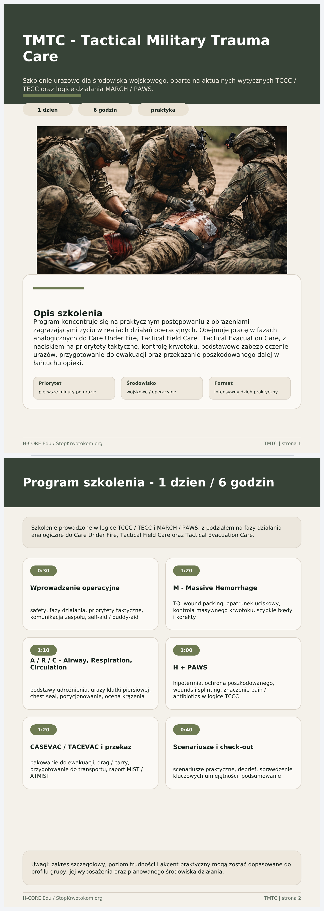

Tactical Officer Trauma Care (TOTC)
TOTC – Tactical Officer Trauma Care. Szkolenie operacyjne dla funkcjonariuszy oparte na aktualnych wytycznych TCCC i TECC.

Tactical Military Trauma Care (TMTC)
TMTC – Tactical Military Trauma Care. Szkolenie urazowe dla środowiska wojskowego oparte na wytycznych TCCC / TECC i logice MARCH / PAWS.

C.O.R.E. Stop Krwotokom (cywile)
3 moduły szkoleniowe: Moduł 1: Tamowanie krwotoków (STOP THE BLEED®). Moduł 2: Zdarzenia masowe (segregacja SALT). Moduł 3: Gotowość cywilna 24 h (blackout i ewakuacja).

Pełna oferta
Pełny dokument oferty szkoleniowej TOTC w PDF.
Otwórz PDF oferty TOTC